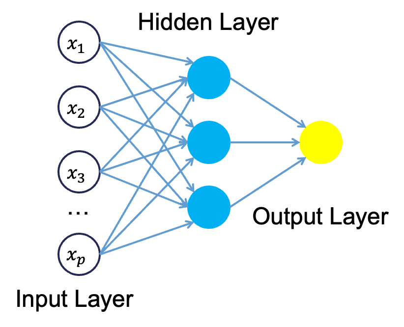
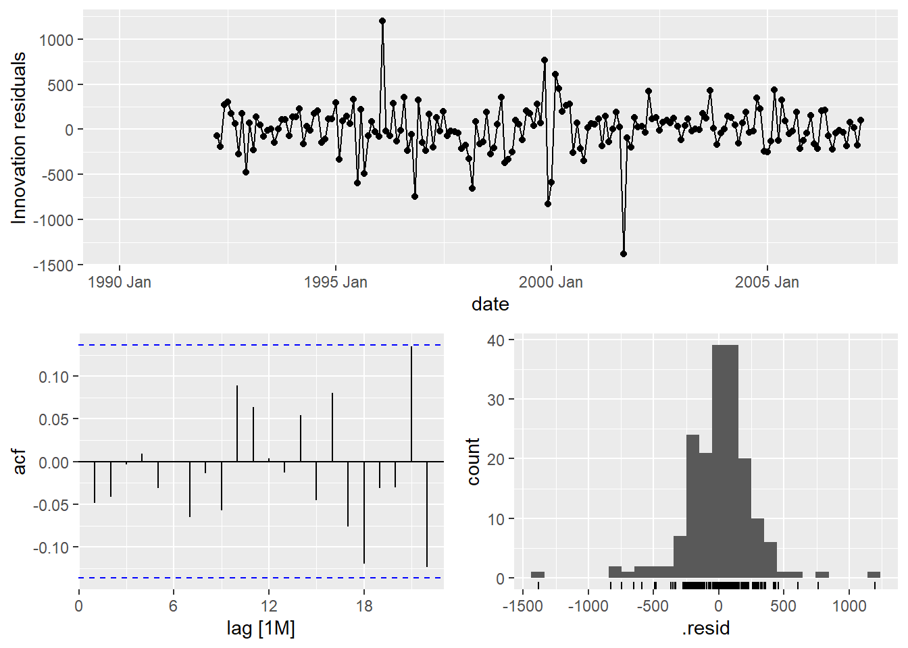
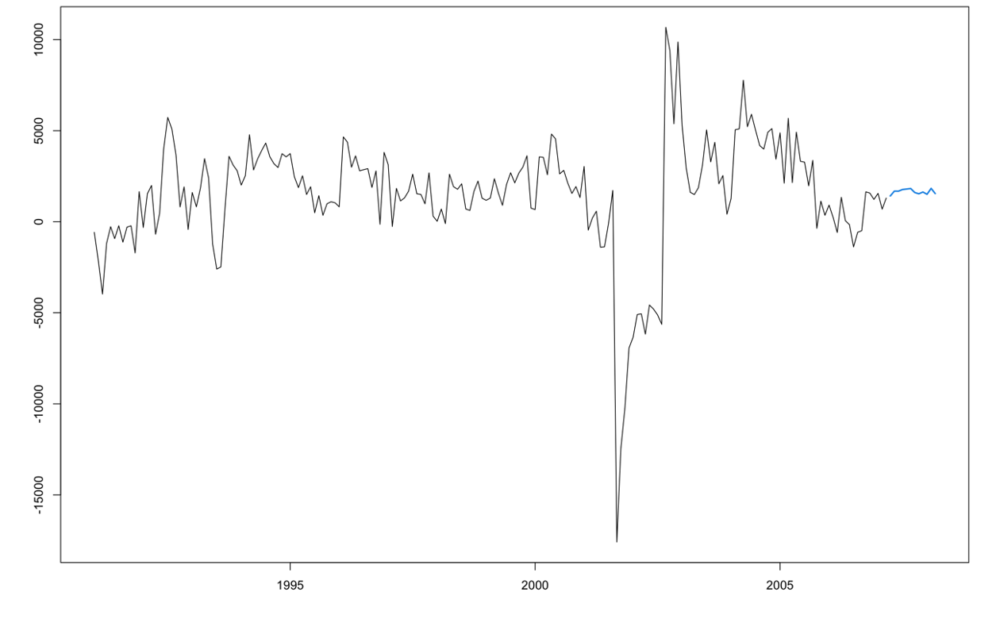
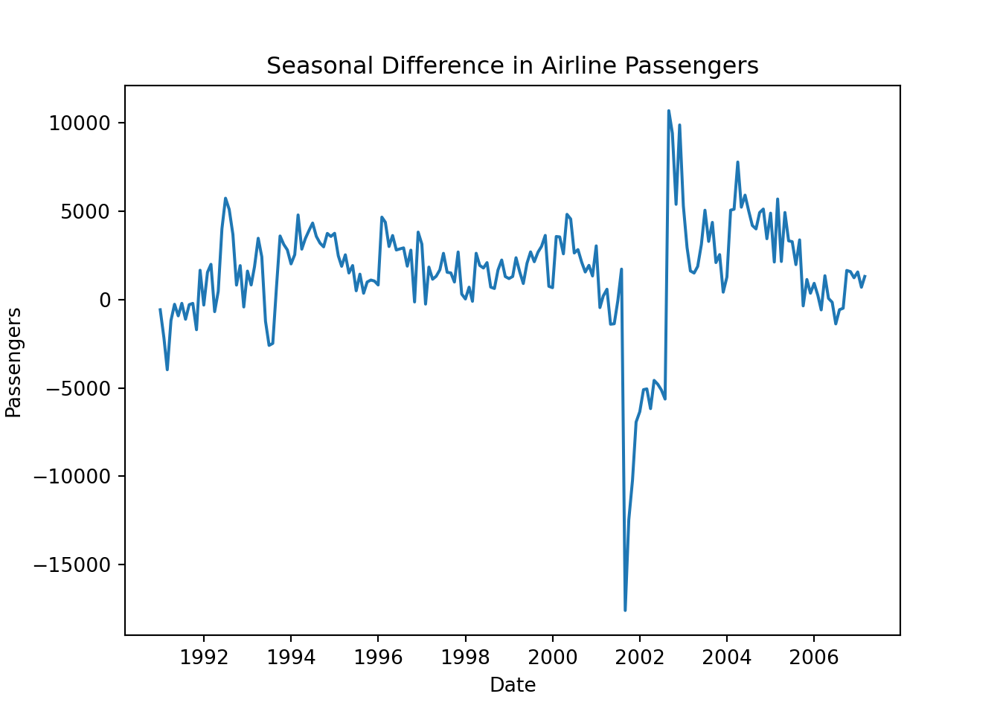
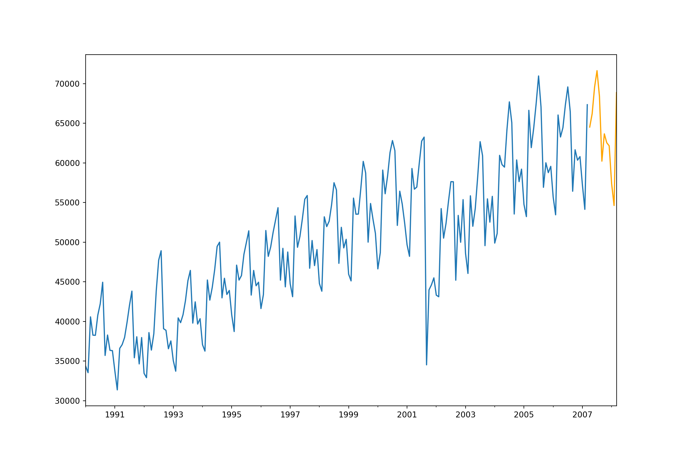
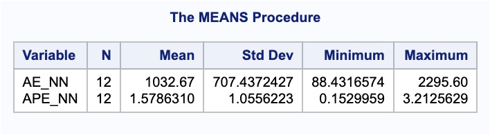

Chapter 8 Neural Networks for Time Series
8.1 Structure
Neural network models are considered “black-box” models because they are complex and hard to decipher relationships between predictor variables and the target variable. However, if the focus is on prediction, these models have the potential to model very complicated patterns in data sets with either continuous or categorical targets.
The concept of neural networks was well received back in the 1980’s. However, it didn’t live up to expectations. Support vector machines (SVM’s) overtook neural networks in the early 2000’s as the popular “back-box” model. Recently there has been a revitalized growth of neural network models in image and visual recognition problems. There is now a lot of research in the area of neural networks and “deep learning” problems - recurrent, convolutional, feedforward, etc.
Neural networks were originally proposed as a structure to mimic the human brain. We have since found out that the human brain is much more complex. However, the terminology is still the same. Neural networks are organized in a network of neurons (or nodes) through layers. The input variables are considered the neurons on the bottom layer. The output variable is considered the neuron on the top layer. The layers in between, called hidden layers, transform the input variables through non-linear methods to try and best model output variable.

8.3 Time Series Neural Networks
In time series problems we use autoregressive neural networks instead. In autoregressive neural networks the bottom layer (input variables) also contains lags of the target variable as possible inputs. The number of lags to include is typically done through trial and error. We can approach this problem similar to ARIMA modeling with correlation plots and automatic selection techniques. However, there are no MA terms in this autoregressive neural networks. For seasonal data we typically include all lags up through one season unless correlation plots say you only need specific ones. We do however need to make our data stationary first since we are dealing with lagged terms of the target variable.
Let’s see how to build these in each of our softwares!
8.3.1 R
For our dataset we have a point intervention at September, 2001. We can easily create a binary variable that takes a value of 1 during that month and 0 otherwise.
To build an autoregressive neural network in R, we use the NNETAR function inside of the model function. This function cannot take differences of your data so we need to input our differenced target variable instead. We use the mutate function to calculate this new differenced target variable. Similar to previous sections, we will build two versions of the neural network model - one we specify ourselves, and one we let the computer optimize through automatic selection. By using the formula structure in the NNETAR function in the model function, we can add this intervention to our model. The p = and P = options in the AR function piece of the formula allows us to specify the number of normal and seasonal autoregressive lags respectively. If we do not specify these options, R will try to optimize them for us. Lastly, we can use the report function on the automatically selected neural network to find out what model R went with.
train<-train %>% mutate(Sep11 = if_else(date >= yearmonth("2000 Sep"),1,0))
set.seed(12345)
model_nnet <- train %>%
mutate(diff_Pass = difference(Passengers, 12)) %>%
model(
hand = NNETAR(diff_Pass ~ Sep11 + AR(p = 1, P = 3)),
auto = NNETAR(diff_Pass ~ Sep11)
)
model_nnet %>%
select(auto) %>%
report()## Series: diff_Pass
## Model: NNAR(15,1,8)[12]
##
## Average of 20 networks, each of which is
## a 16-8-1 network with 145 weights
## options were - linear output units
##
## sigma^2 estimated as 68898We can also examine the residuals from each of the models we created above using the gg_tsresiduals() function that we have used for our other models we have built.


The only downside of the functionality of building an autoregressive neural network in R is that if we need to take differences for stationarity, the functions will not return the data back to its original scale like they do with ARIMA models. That means that the neural network forecasts would provide the following plot:

These are forecasts on the differences and not the original scale of the data. We will need to put our data back on its original scale to see how well it forecasts our Passengers variable. First, to get the forecasts of the differences we still use the forecast function. For this dataset, we have our Sep11 variable that we forecast to have values of 0 for each of the 12 observations we are forecasting for airline passengers. To do this we create another variable (of the same name) that has future values in our test dataset. We then use the forecast function with both the model and the test dataset as inputs. The forecast function will be expecting a test dataset that contains the Sep11 variable in it.
The two for loops below tansform the forecasted differences back into the original scale of the data. The .mean variable from the forecast object should just be added to the real observation 12 time periods before because it is the forecasted difference between the current point in time and the point 12 months before.
test$Sep11 <- rep(1, 12)
model_nnet_for <- fabletools::forecast(model_nnet, test)
nnet_for_hand <- rep(NA, 12)
nnet_for_auto <- rep(NA, 12)
for(i in 1:12){
nnet_for_hand[i] <- train$Passengers[length(train$Passengers) - 12 + i] + model_nnet_for$.mean[i]
}
for(i in 1:12){
nnet_for_auto[i] <- train$Passengers[length(train$Passengers) - 12 + i] + model_nnet_for$.mean[i+12]
}We can then take these forecasted observations and plot them. To make the plotting easier, we use the ts and subset functions from the forecast package.
library(forecast)
Passenger <- ts(USAirlines$Passengers, start = 1990, frequency = 12)
plot_pass <- subset(Passenger, end = length(Passenger) - 12)
plot(plot_pass, main = "US Airline Passengers Forecasts", xlab = "Date", ylab = "Passengers (Thousands)", ylim = c(30000,80000), xlim = c(1990, 2009))
lines(ts(nnet_for_auto, start = c(2007, 4), frequency = 12), col = "blue")
lines(ts(nnet_for_hand, start = c(2007, 4), frequency = 12), col = "orange")
abline(v = 2007.25, col = "red", lty = "dashed")
Since we created the forecasted values in the original scale ourselves, we will need to calculate the mean absolute error (MAE) and mean absolute percentage error (MAPE) ourselves.
NN_error_auto <- test$Passengers - nnet_for_auto
NN_MAE_auto <- mean(abs(NN_error_auto))
NN_MAPE_auto <- mean(abs(NN_error_auto)/abs(test$Passengers))*100
NN_error_hand <- test$Passengers - nnet_for_hand
NN_MAE_hand <- mean(abs(NN_error_hand))
NN_MAPE_hand <- mean(abs(NN_error_hand)/abs(test$Passengers))*100
NN_MAE_auto## [1] 1268.752## [1] 1.977935## [1] 2022.353## [1] 3.110601It appears that the automatically selected neural network far out performed the model we selected by hand. Out of all of the models we have built on the data so far, this has the best MAE and MAPE.
8.3.2 Python
There are a variety of ways of building neural network models in Python. Below we will work with the MLPRegressor function to help specify exactly what we want in our time series neural network. Other options that exist are in the neuralforecast package, but have less control over the model.
Let’s take a look at the method that is most closely related to the approach described above and the approach used in R. If we want to build a neural network with autoregressive terms and only one hidden layer, we can use the MLPRegressor function in Python. The downside of this function is that it doesn’t create the differences or the lagged variables for us. First, we will make a copy of the original dataset and save it for our data manipulations. Next, we have to calculate the seasonal difference of our Passengers variable using the shift function. From our new diff variable we need to calculate lagged terms again using this shift function. Here we calculate the first lag and the first three seasonal lags. For our dataset we also have a point intervention at September, 2001. We can easily create a binary variable that takes a value of 1 during that month and 0 otherwise. We then split off our training and testing split like we have done previously and plot the resulting diff variable.
usair_nn = usair
usair_nn['diff'] = usair_nn['Passengers'] - usair_nn['Passengers'].shift(12)
usair_nn['L1'] = usair_nn['diff'].shift()
usair_nn['L12'] = usair_nn['diff'].shift(12)
usair_nn['L24'] = usair_nn['diff'].shift(24)
usair_nn['L36'] = usair_nn['diff'].shift(36)
usair_nn['Sep11'] = 0
usair_nn['Sep11'][140] = 1
train_nn = usair_nn.head(207)
test_nn = usair_nn.tail(12)
plt.cla()
plt.plot(train_nn["diff"].dropna())
plt.xlabel("Date")
plt.ylabel("Passengers")
plt.title("Seasonal Difference in Airline Passengers")
plt.show()
Now that we have the data structured like we need it, we can build our neural network model. The inputs to the MLPRegressor function in Python are a data matrix for the predictor variables (X) and a target variable vector (y). For our predictor variable matrix we include all of the variables in our training dataset except the Month, Year, Passengers, and diff variables. Since the MLPRegressor function cannot handle missing values, we also remove the leading observations with missing values for the third seasonal lag leaving us with only 159 observations to build this model with. From there we use the MLPRegressor function with the .fit function on the end where we specify our predictor variable matrix and target variable vector. The hidden_layer_sizes = (3, ) option is telling the function to use one hidden layer with only 3 nodes within it. For more hidden layers, you just add the number of nodes you want in them after the 3 in the code.
from sklearn.neural_network import MLPRegressor
X = train_nn.drop(['Month', 'Year', 'Passengers', 'diff'], axis = 1).tail(159)
y = train_nn['diff'].tail(159)
model_nnet = MLPRegressor(hidden_layer_sizes = (3,), random_state=123, max_iter = 100000).fit(X, y)The only downside of the functionality of building an autoregressive neural network in Python using the MLPRegressor function is that if we need to take differences for stationarity, the functions will not return the data back to its original scale like they do with StatsForecast models we used in previous sections. That means that the neural network forecasts would provide the following plot:
These are forecasts on the differences and not the original scale of the data. We will need to put our data back on its original scale to see how well it forecasts our Passengers variable. First, to get the forecasts of the differences we use the predict function. For this dataset, we have our Sep11 variable that we forecast to have values of 0 for each of the 12 observations we are forecasting for airline passengers. We have already created this when we created our test dataset for our neural network.
We then take the final 12 observations from our training dataset and add them to our forecasted differences. The predictions from the predict function should just be added to the real observation 12 time periods before because it is the forecasted difference between the current point in time and the point 12 months before. We can also plot these new forecasts now that we have them on the original scale of the data.
X_test = test_nn.drop(['Month', 'Year', 'Passengers', 'diff'], axis = 1)
training_tail = train_nn.tail(12)
training_tail['NN_pred'] = model_nnet.predict(X_test)
nn_pred = training_tail['NN_pred'] + training_tail['Passengers']
nn_pred.index = pd.to_datetime(pd.date_range(start='4/1/2007', end='3/1/2008', freq='MS'))
test_nn['nn_pred'] = nn_pred
plt.cla()
fcast = test_nn['nn_pred']
ax = train_nn["Passengers"].plot(figsize=(12,8))
fcast.plot(ax = ax,color = "orange")
plt.show();
We can use the forecasted values from the above code to evaluate these forecasts by comparing them to the test dataset.
error = test_nn['Passengers'] - test_nn['nn_pred']
MAPE = np.mean(abs(error)/test_nn['Passengers'])*100
print("NN MAE =", np.mean(abs(error)), "\nNN MAPE =", MAPE)## NN MAE = 1055.3752180711406
## NN MAPE = 1.6430579092444202These values look very comparable to the other models we have been building for our US airlines dataset.
8.3.3 SAS
If we want to build a neural network with autoregressive terms, we can use the PROC HPNEURAL procedure in Python. The downside of this function is that it doesn’t create the differences or the lagged variables for us. First, we use the PROC EXPAND procedure to help create these variables for us. In PROC EXPAND we use the CONVERT statement to create a seasonal difference on our Passengers variable and call it diff. To calculate this we use the ( dif 12 ) option. From our new diff variable we need to use PROC EXPAND again to calculate lagged terms using this CONVERT statement along with the ( lag 1 ) option for the first lag and so on for other lags. Here we calculate the first lag and the first three seasonal lags. For our dataset we also have a point intervention at September, 2001. We can easily create a binary variable that takes a value of 1 during that month and 0 otherwise using the DATA step. We also need to create a dataset that blanks out all the values of the Passenger variable past in our test window. SAS needs a dataset with the training data as well as future values of the predictor variables to forecast.
proc expand data = usair out = usair_lag method = none;
id date;
convert Passengers = diff / transform = ( dif 12 );
run;
proc expand data = usair_lag out = usair_lag method = none;
id date;
convert diff = L1 / transform = ( lag 1 );
convert diff = L12 / transform = ( lag 12 );
convert diff = L24 / transform = ( lag 24 );
convert diff = L36 / transform = ( lag 36 );
run;
data usair_lag;
set usair_lag;
Sep11 = 0;
if date = '1sep2001'd then Sep11 = 1;
if date > '1mar2007'd then Passengers = .;
run;Now that we have the data structured like we need it, we can build our neural network model. We use the PROC HPNEURAL procedure to build out the neural network. We put our dataset in that contains all of the lagged variables on the differences. The TARGET statement is used to define the target variable which is diff and not Passengers because of the need of stationarity. The level = int option defines the target variable as a continuous / interval variable and not a categorical one. The INPUT statement defines the predictor variables Sep11, L1, L12, L24, and L36. Again, we use the level = int option to show these are continuous and not categorical. With the HIDDEN statement we define the number of nodes we want in our one hidden layer. The TRAIN statement tells the procedure to train the model and the SCORE statement defines the dataset that saves out predictions.
proc hpneural data = usair_lag;
target diff / level=int;
input Sep11 L1 L12 L24 L36 / level=int;
hidden 3;
train;
score out = pred_nn;
run;The only downside of the functionality of building an autoregressive neural network in SAS using the HPNEURAL procedure is that if we need to take differences for stationarity, the functions will not return the data back to its original scale like they do with the ARIMA procedure we used in previous sections. That means that the neural network forecasts would provide the following plot:
These are forecasts on the differences and not the original scale of the data. We will need to put our data back on its original scale to see how well it forecasts our Passengers variable. This will take some manipulation using DATA steps in SAS. First, we need to isolate out the 12 forecasted values in the dataset from the PROC HPNEURAL procedure. To do that we delete the first 207 observations with the IF and THEN functionality. These 12 forecasted differences correspond to the last 12 observations in our training dataset. These predictions should just be added to the real observation 12 time periods before because it is the forecasted difference between the current point in time and the point 12 months before. SO we use the same process and another DATA step to isolate the last 12 observations in the training dataset. Once we use a MERGE statement in another DATA step to get these columns together, we can add these variables together to get the forecasted values of the Passengers variable. Next, we use the MERGE statement in another DATA step to merge the original test dataset with the predicted values. Lastly, we calculate the absolute error and absolute percentage error for each observation with our last DATA step. To get the average of these calculations, we throw our test dataset into the PROC MEANS procedure where we specify these variables with the VAR statement.
data pred_nn;
set pred_nn;
if _n_ < 208 then delete;
run;
data train_tail;
set train;
if _n_ < 196 then delete;
run;
data nnet_f;
merge pred_nn train_tail;
run;
data nnet_f;
set nnet_f;
Predict_NN = P_diff + Passengers;
keep Predict_NN;
run;
data test;
merge test nnet_f;
run;
data test;
set test;
AE_NN = abs(Passengers - Predict_NN);
APE_NN = abs(Passengers - Predict_NN)/Passengers*100;
run;
proc means data = test;
var AE_NN APE_NN;
run;
These values look very comparable to the other models we have been building for our US airlines dataset.